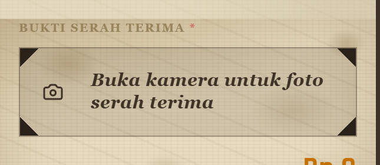
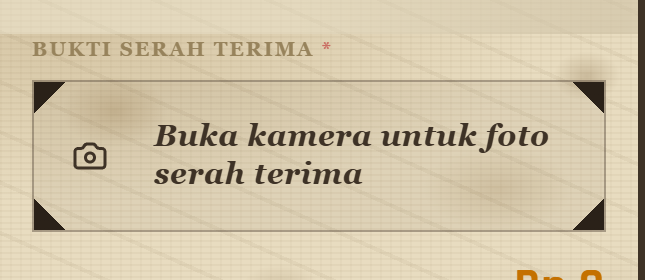
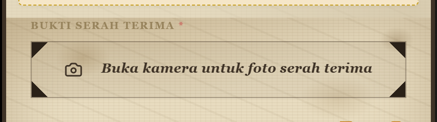
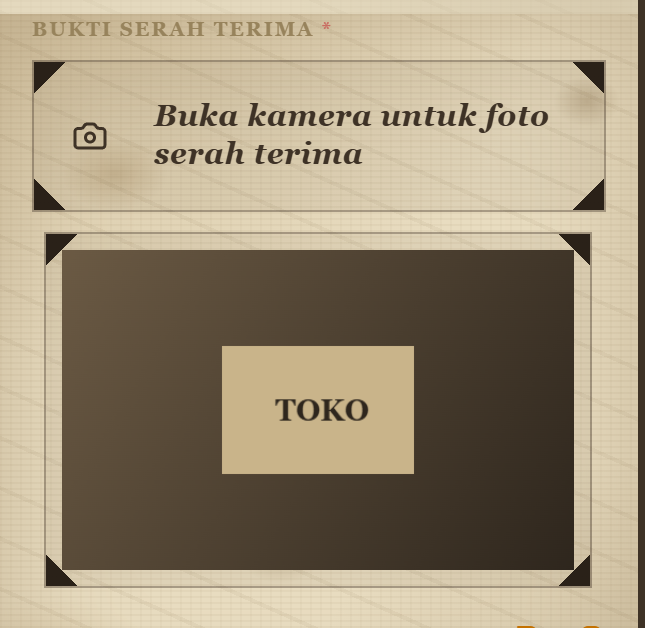

B - PHOTO CORNERS, built (real terminal, Indonesian)
Phone at rest, held down, Lite Mode; the PC; and the photo you take, sitting in the same corners.
Phone, at rest

Held down: sinks 1 px, the paper darkens

Lite Mode: the same (no shadow to lose)

PC

The photo taken: the frame shrinks to it, the corners grip the picture (frame shown under the button with a stand-in picture; in the app the photo replaces the button)